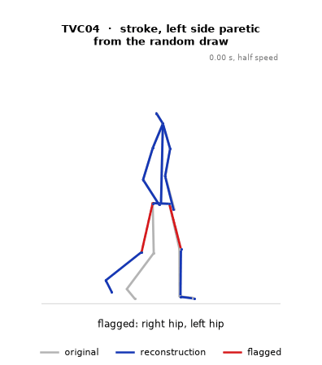
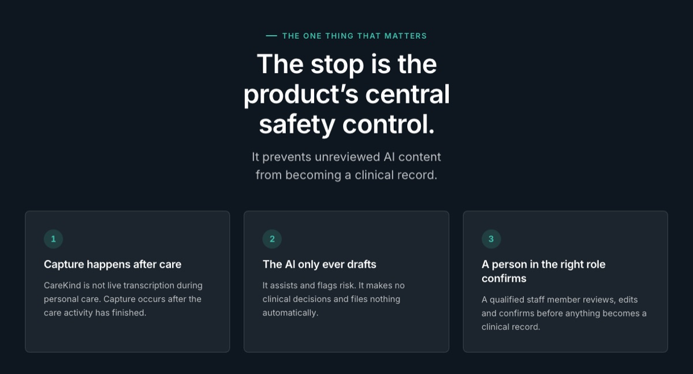

AI / ML engineer · Sydney
Kaitao Lai
I build LLM systems that show their sources: multi-agent pipelines, retrieval that refuses when the context is weak, and evaluation sets that decide what ships.
19 years of software and data engineering, machine learning since 2017 at CSIRO, and a Ph.D. in bioinformatics. I test a model against simple baselines before I trust it.
01About
I started as a software engineer in 2007, moved into bioinformatics, and spent the next decade building data pipelines and machine learning models for genomics research at CSIRO, the University of Sydney and the ANZAC Research Institute. That work came with a Ph.D. from the University of Queensland and a habit I still keep: decide how a model will be judged before you train it.
Since 2026 I have been building LLM products end to end: multi-agent pipelines, retrieval that cites its sources, contracts that keep an AI draft from becoming a record on its own, and the evaluation sets and cost baselines that decide what ships.
Things I work with most:
- Python and FastAPI
- LangGraph and MCP
- PostgreSQL and pgvector
- PyTorch on CUDA
- React and React Native
- Docker and GitHub Actions
02Work

Project lead · 2026 – present
StockClaw AI
Market intelligence from five agents in parallel, with every claim cited.
Filings, central-bank releases and news turned into ranked signals for each user's watchlist. Web app and a native Android app, live on Google Play in 147 countries. I led a team of four and wrote most of the code.
LangGraph · FastAPI · Celery · PostgreSQL · pgvector · React Native
Read the case study →

Sole developer · 2026 – present
MotorPhen
A Transformer trained from scratch, then tested honestly.
A 10-million-parameter masked autoencoder rebuilt from a paper whose code was never released. It matched the published result on healthy adults, but in 50 stroke survivors a one-variable clinical rule beat it (AUROC 0.84 against 0.54 and 0.62).
PyTorch · CUDA · scikit-learn · statsmodels
Read the case study →
Tech lead · Jun – Jul 2026
DeepRouter Skills Marketplace
Packaged AI skills on a multi-model routing gateway.
Led the four-person team that built the first version: 48 ticket specs, 71 of my own PRs, and most of the team's reviews. Built versioning, package builds on activation, and plan checks on every run.
Go · TypeScript · React · PostgreSQL · Redis
Read the case study →

Team lead, contracts owner · Aug – Nov 2026
CareKind AI
Clinical notes for aged care, with a person in the loop.
The system drafts a structured note from a care worker's account; a qualified person must confirm it before it counts. I designed the contracts so that only the confirm gate can create a record, in a team of ten.
Python · FastAPI · PostgreSQL · React Native
Read the case study →
More projects
Live↗
AI Virtual Town
Six LLM-driven characters who live, talk and remember on their own, after the Generative Agents paper. Memory compression, A* pathfinding, WebSocket sync, and LLM calls capped and paused when nobody is watching.
React · PixiJS · Node.js · WebSocket
GitHub↗
ClauseKitAI
Tenancy contract summariser in English and Chinese, with risk-clause alerts and an optional retriever over the NSW Residential Tenancies Act.
Streamlit · GPT-4 · Claude · Ollama
GitHub↗
PulseScribeAI
Prototype clinical scribe: audio or transcript in, SOAP notes and GP letters out.
Python · Streamlit · Whisper
03Experience
-
Jul 2018 – present
Data (AI) Engineer (Bioinformatics Research Fellow) · ANZAC Research Institute, NSW Health
Anthropic-ecosystem practice (MCP, prompt caching, streaming, structured output and eval-driven guardrails); a 10-million-parameter Transformer trained from scratch in PyTorch on a CUDA GPU server (MotorPhen); CareKind AI, as code owner for the backend and interface contracts in a team; Python pipelines for 500GB+ multi-omics data on NCI Gadi; the t-SNE Hypergate analysis for platelet subpopulations; and dashboards that explain results to clinicians.
-
Feb 2026 – Mar 2026
Data (AI) Engineer · Hypercube Scientific, St Leonards NSW
AI and data pipelines on Snowflake for pharmaceutical sales data from 500+ Chemist Warehouse outlets, with IQVIA and PharmX; a LangChain analytics system that forecasts medication demand (EWMA, Croston's method).
-
Mar 2024 – Mar 2025
Senior Data (AI) Engineer / Bioinformatics Software Engineer · Transplant Genomics Group, Westmead Institute for Medical Research, USyd
GraftMatch, a full-stack transplant gene mismatch analyser; the ML pipeline for a $2M MRFF kidney transplant genomics project (500+ donor-recipient pairs); HPC pipelines on 10TB+ data with compute time cut by 60%; AlphaFold structural modelling for CAR-T research.
-
Jun 2021 – Nov 2023
Senior Bioinformatics Software Engineer / Research Fellow · Ancestry & Health Genomics Laboratory, University of Sydney
Python pipelines for 2TB+ of deep whole-genome data from tumour-blood pairs, and ML models of microbial diversity in prostate cancer cohorts, with version control, automated tests and CI.
-
Feb 2017 – May 2018
Data (ML) Software Engineer / Postdoctoral Research Fellow · CSIRO Transformational Bioinformatics Group, North Ryde
A CRISPR-Cas12a guide RNA activity predictor (Random Forests and ensembles, 86% accuracy), serverless applications on AWS Lambda, and the Elsevier chapter "Artificial Intelligence and Machine Learning in Bioinformatics" (first author, 2019).
-
May 2015 – Jan 2017
Bioinformatics Software Engineer / Full-Stack Developer · Hawkesbury Institute for the Environment, Western Sydney University
TaxaCloud, an elastic cloud platform for metagenomic amplicon analysis built on microservices and QIIME 2, and a full-stack web app (Node.js, Vue.js, Python) that lets non-IT staff run microbiome analysis.
-
2007 – 2014
Software Engineer (Earlier Roles) · TERN (UQ); Bayer CropScience (Ghent); ACPFG (UQ); UQ ITS
Scientific data management, NGS variant discovery (Bayer CropScience SGSautoSNP), enterprise application development (PeopleSoft, C# .NET, Oracle PL/SQL) and Java / SQL Server engineering.
04Skills
LLMs and agents
LangGraphLangChainOpenAI Agents SDKClaude Agent SDKMCPTool callingStructured outputSSE streamingPrompt caching
Retrieval and evaluation
pgvectorChromaDBHybrid BM25Reciprocal Rank FusionCross-encoder rerankGolden setsRAGASNoise baselinesBootstrap CIs
Machine learning
PyTorchCUDAApple MPSTransformersscikit-learnXGBoostTensorFlowSHAP
Backend and apps
PythonFastAPICeleryRedisPostgreSQLGoTypeScriptReactReact Native
Infrastructure
DockerGitHub ActionsAWSAzureVercelSnowflakeNextflowHPC (PBS)
05Research
Before industry I spent more than a decade in genomics research: 30 peer-reviewed papers, over 3,000 citations and an h-index of 23. I wrote the Elsevier reference chapter Artificial intelligence and machine learning in bioinformatics (first author, 2019) and gave a TEDxSydney 2017 talk on cloud computing for ALS research.
Papers, projects and the academic CV are on my academic site and Google Scholar.
Certifications
- Building with the Claude API
- Claude Code in Action
- Introduction to Model Context Protocol
- Introduction to Agent Skills
Anthropic Education, 2026.
06Contact
Open to AI and ML engineering roles in Sydney, hybrid or remote. The quickest way to reach me is a message on LinkedIn.
Message me on LinkedIn